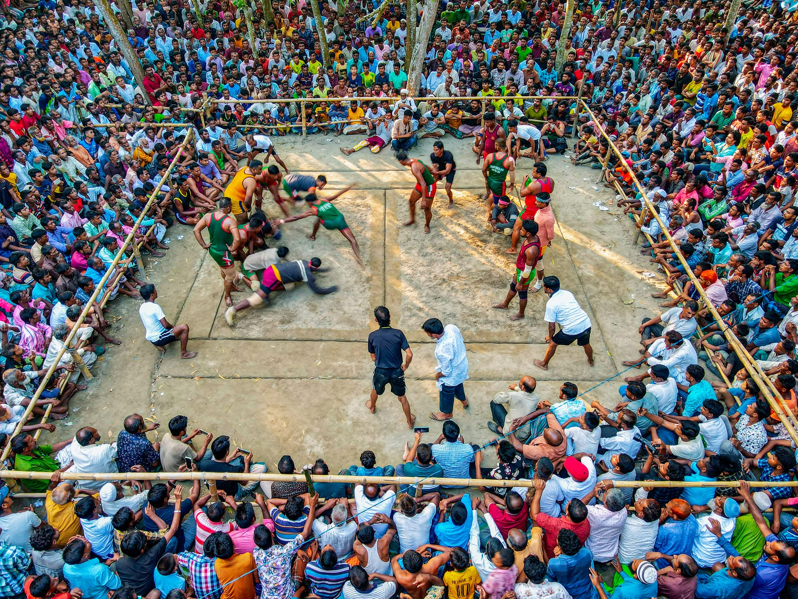

Ha-du-du (হা-ডু-ডু)
An ancient tag-style folk sport, Ha-du-du remains one of Bangladesh's most cherished traditional games.
Overview
Ha-du-du blends speed, strategy, breath control, and community participation into a dynamic team sport requiring no complex equipment.

Figure 1.0: A local Ha-du-du match drawing village spectators.
Historical Background & Post-Independence Context
Kabaddi—historically known across rural Bengal as Ha-du-du—is deeply rooted in Bengali agrarian folk culture.
Following independence in 1971, Bangladesh faced economic challenges while building state institutions and cultural identity.
Historically, community matches were held during rural festivals, harvests, and local celebrations.
Living Memory & Extinction Threats
Despite its status as the national sport, Ha-du-du faces severe pressure from urbanization and digital entertainment.
Resilience in Local Traditions
- Muktagacha Tournament: An annual tournament hosted continuously in the Mymensingh region.
- Community Lineups: Matches organized around local rivalries, inclusive of all age groups.
- Preservation Needs: Sports researchers advocate for dedicated grassroots funding and school tournaments.
Technical Specifications & Rules
| Roster Size | 12 players total (7 active, 5 substitutes) |
|---|---|
| Substitutions | Maximum 3 per match |
| Player Weight Limit | Maximum 80 kg for official competition |
| Match Duration | Adults: 45 mins (20m half + 5m break + 20m half). Extra time: Two 5-minute halves. |
| Officials | 1 Referee, 2 Umpires, 1 Scorer |
Field Marking Terminology
- Midline (Central Line): Divides the playground into two equal defender zones.
- Baulk Line (Cant Line): Target lines drawn parallel to the center line.
- Lobby Lines: 1-meter side strips reserved for players who are tagged out.
Core Gameplay & Scoring Mechanics
Taking a Breath (Raid): The raider enters opponent territory while continuously chanting "Kabaddi" or "Ha-du-du" without pausing for breath.